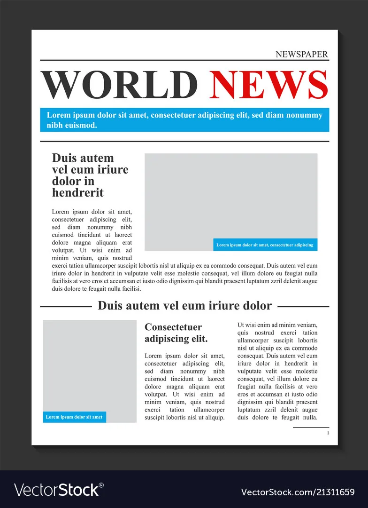

STORY


.jpg)

Community Initiative Society (CIS) is a non-governmental, community-based, self financed, International Humanitarian organization. The organization formed in 2014. CIS is registered with Joint Stock Company and NGO Affairs Bureau of Bangladesh. Since inception, CIS is supporting human rights, social empowerment, disaster preparedness, mitigation, disaster risk reduction, climate change, health risk management, capacity building, and relief activities that reduce the impact of disasters upon countries and communities for the low income underprivileged people. CIS is a partner of Asia Pacific Alliance for Disaster Management (A-PAD) and Asian Disaster Reduction & Response Network (ADRRN).
Read MoreBuild a safer community by reducing the risk of a natural disasters and human induced hazards by developing efficient response management systems, providing humanitarian support, tackling climate change, providing healthcare to the undertaking research and innovation programs.
 Completed Successfully NPF Project For 3 Years In Bangladesh
Completed Successfully NPF Project For 3 Years In Bangladesh
Community Initiative Society (CIS) in collaboration with Asta Pacific Alliance for Disaster Management (A-PAD) completed successfully NPF project for 3 years in Bangladesh. CIS established 7 Disaster Coordination Center in...
Read More
"A-PAD Award 2023" to Mr. Saber Hossain Chowdhury MP, Group Director, Karnaphuli Group
Asia Pacific Alliance for Disaster Management (A-PAD) rewarded "A-PAD Award 2023 to Mr. Saber Hossain Chowdhury MP Group Director, KarnaphuliGroup for his remarkable contribution to disaster management and development activities ...
Read More
250 food packs for the Forcibly Displaced People from Myanmar (FDMNs) at Camp- 15 Jamtoli
CPHC center
Community Initiative Society (CIS) in collaboration with MERCY Malaysia with the support of Maybank Islamic handed over 250 food packs for the Forcibly Displaced People from Myanmar (FDMNs) at Camp-15...
Read More
CIS paid a courtesy visit to welcome the newly appointed Honorable Ambassador Mr. Iwama
Kiminori at the Embassy of Japan in Bangladesh
On 13th March 2023 CIS paid a courtesy visit to welcome the newly appointed Honorable Ambassador Mr. Iwama Kiminori at the Embassy of Japan in Bangladesh.On this event, CIS Chairman-...
Read More
Disaster Preparedness Day 2023
The Government of Bangladesh organized a drilling session celebrating Disaster Preparedness Day 2023 in collaboration with Community Initiative Society (CIS) and other local organizations. ...
Read More
Arranged the monthly progress meeting, sports and price giving program at Mawa resort
Community initiative society (CIS) with center and field staff arranged the monthly progress meeting, sports and price giving program at Mawa resort on 5th Februar 2023 ...
Read MoreWe believed in superstition and thought that lightning strikes on the wicked. Now we are aware that anyone can die or become severely injured in lightning

Teghoria Habiganj Sadar
Community Initiative Society (CIS) has contributed greatly in terms of disaster management In Pabna, CIS assisted in capacity building of the local communities and private sector in developing sustainable emergency healthcare initiatives to tackle any potential impact of natural or man-made disaster Bangladesh is a role model in disaster management because of the integrated and collective efforts of the public and private sectors. Both sectors worked together to tackle every disaster in the history of Bangladesh. I believe we, the local administration, can collaborate with CIS to work on disaster preparedness management and response programmes in Pabna. I also appreciate CIS efforts in the healthcare system of Pabna. Its contribution to the manpower in our health sector can improve the quality of service for our people I wish them all the best in this regard and will assist CIS in any possible way. We have a common goal to serve the people and we are united in this purpose.
Deputy Commissioner, Pabna
"I had a lot of trouble while delivering my elder children in Burma. You have to look for trained midwives. They are not available all the time. I was more comfortable in delivering my twins at the centre. The primary health centre is more convenient,
Rohingya

Community Initiative Society (CIS) is a non-governmental, community-based, self financed, International Humanitarian organization. The organization formed in 2014.

Don’t miss our future updates! Get Subscribed Today!
Copyright © 2023 Community Initiative Society (CIS) | All Rights Receivers